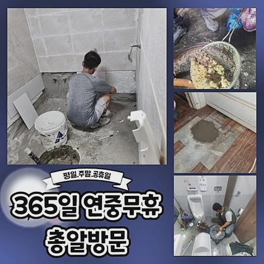
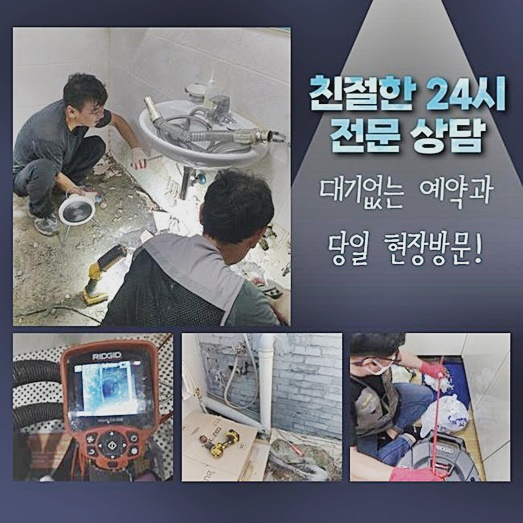
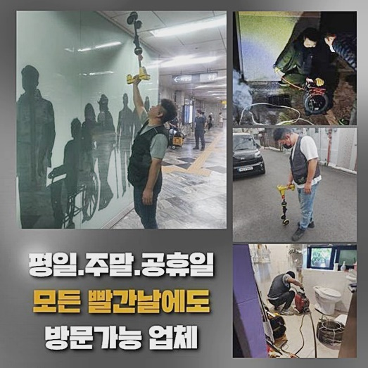
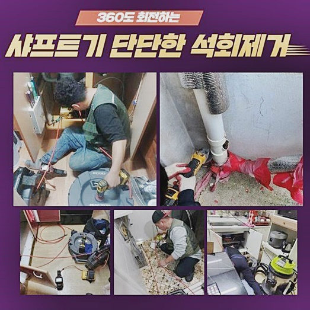
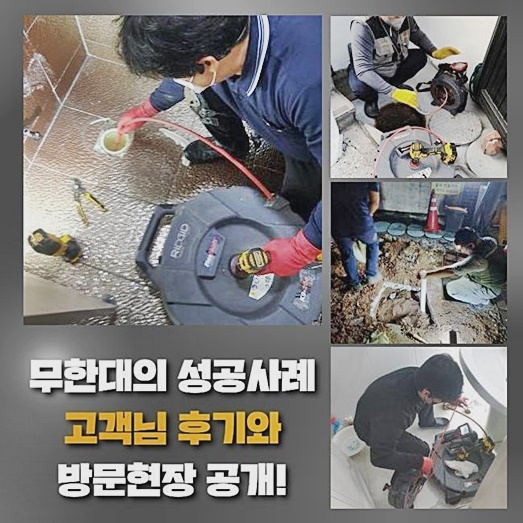
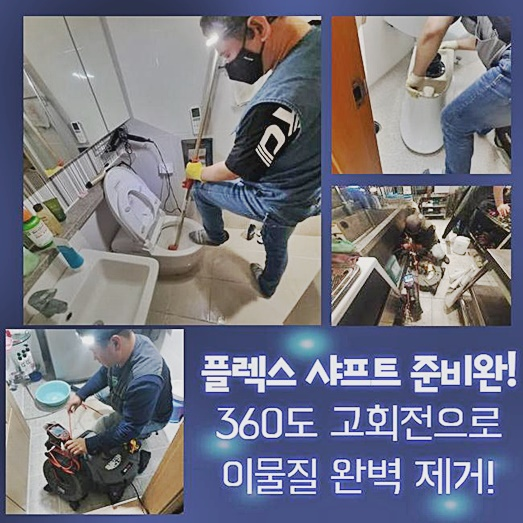

🏠 천안 성정동씽크대배수관막힘 쌍용1동 배관내시경카메라 배관막힘누수
천안 싱크대막힘 전문 시공 후기

📋 작업 개요
- 위치: 천안
- 서비스 유형: 싱크대막힘, 하수구막힘, 배관막힘, 누수수리, 역류해결, 배관청소, 고압세척
- 작업 일시: 2024. 9. 24. 18:11
- 업체명: 하수구수사대 (010-5615-2118)
🔍 문제 상황
천안 성정동씽크대배수관막힘 쌍용1동 배관내시경카메라 배관막힘누수
찾아뵈었던 장소에선 음식업소를 운영하는 고객님이 다급한 목소리로 의뢰를 부탁하셨죠
음식점을 지속시키다가 역류증세가 발발하여 저희들을 불러주셨는데요
빠르게 당도하여 도착하니 배수구에선 오수가 역류했죠
육가를 개봉해 관찰하니 상태들은 엉망이였어요
집수시설로 배출되어야하는 공간에 오염물과 기름성분들이 섞이는 바람에 출수구부분을 막은 모습이였죠
첫째로 석션기기로 떠다니는 이물을 빨아당겨 추후 세척의 기초를 잡았는데요
석션들로 배수관의 잔재들은 배출되었으나 관로에 잔여하는 굳어버린 고착이물을 비롯해 벽라인에 자리잡은 굳은 기름류를 없애주어야만 했죠
그래서 샤프트기를 이용하여 계획들을 세웠어요
조금 전 사용한 장치인 석션기로 말씀드리면 잔해물을 흡입하는 역할들을 맡고있고 다음으로 이용되는 것은 플렉스 샤프트로 고착물을 청소시키기위한 장비죠

🔎 원인 분석
💡 전문가 진단: 정밀 진단 장비를 사용하여 슬러지의 고착 여부를 판명하고 타격/세척 작업을 실시했습니다.
해당 기기는 전문적이지 않은 사람이 이용하기에는 전문성이 없을 시 사용을 하는것이 불가해요
주의하여 실시하지 못할 시 배수관에 피해를 야기시키므로 부차적인 증상이 생기게됩니다
이러한 까닭에 전문성을 활용하는 전문인들의 대응이 필요합니다
스케일링으로 굳게된 이물들을 조심히 제거하며 세척을 속행했는데요
예상외로 심부에도 잔존해있어서 시간자체가 오래걸린 장소입니다
고객분은 업소를 1년전 시작했다 말하셨는데요 지금까지 무난하게 이용했어서 해당 증상들은 따로 예방하지 못한것 같다 말씀하셨는데요
보통 생활중에 막힘은 정기적으로 발생되는것이 아니므로 중요한 문제들이라고 여기지않으시는 고객도 많으십니다
그러나 크게 신경안써도 되는 것이라 판단한 끝에 내버려두면 지출 사안에서도 부담을 불러일으킵니다
그래서 관리하는 의뢰인분들의 레벨에서의 관리책 실시가 요구되겠습니다
현장으로 돌아와 샤프트장치로 제일 깊숙한 지점에까지 투입시켜 말끔히 걷어준 뒤 정리되고나서 재차 석션 장비를 사용하여 잔존하는 잔여물을 깨끗히 제거시켰습니다
저희들은 점검 시점과 청소하는 때 완료시점에 항상 내시경을 가용시켜 의뢰자께 수리한 과정들과 결과까지 공개하고 있습니다

🔧 작업 과정
이와같이 깨끗히 작업들을 속행해주어야 고객도 안심되며 저희들도 빠트릴 수 없기에 무조건적으로 실시하는 절차랍니다
달려갔던 장소에서의 작업 수준은 높았지만 그 결과는 제대로 해결되었어요
의뢰자께 수월히 관리하시도록 설명했어요
안내했던 사항같이 통수오류의 문제들이 눈앞에 다가왔을때 방치하시면 안좋은 사태를 생겨나게 하므로 전문적인 방법으로 해결하세요!
고객님에게서 말씀하셨다시피 해당 문제에 있어서 시작 단계에서는 가벼운 사안으로 보이겠으나 소홀히 생각하면 갑작스레 중요한 문제들이라고 등장할테죠
때문에 영업에 제한이 늘어나고 덧붙여 심한 위생이슈로까지 직결될 수 있어요
그러니 주기적인 관리책을 실시해 해당 사태를 맞닥뜨리기 전 조치하는게 우선입니다
더욱이 일반 식당처럼 다중이용시설은 보건성이 매우 필요하겠습니다
조리공간 라인의 배수 관련 사안은 식당자체의 전체적인 위생에까지 영향을 미치며, 손님들의 인식에도 스크래치를 남기게됩니다
물사용이 많으면 쉽지 않아도 고객님이 확실히 관리를 실시하는게 합리적일테죠
모든 과정에 있어서 하면 예견되지 않은 증상으로 사고들을 예방하고 깔끔한 하수관을 지속할 수 있어요
전문인력의 실력으로 내부 모습을 면밀히 살피고, 이에 걸맞는 해결책을 받을 수 있어요
그리고 세척 완료 시에는 재발되지 않게 내시경 카메라로 확인하고 해당 절차에서도 의뢰자분도 옆에서 관찰을 하게 됩니다
그래서 배수관이 막힌 문제들은 전문진들과 안전하게 완화하는게 최선이라고 할 수 있어요
긴 시간동안 내버려두면 공동관로에까지 증상이 전가될 수 있어요
중앙하수관이 제 기능을 모하면 큰 시공이 실시되야하고 오래도록 수도 사용자체가 힘들고 그에 따른 비용들이 발생하게 될 지 모릅니다


✅ 작업 완료
자가적인 관리들이 여의치않거나 잔해가 빈번히 축적되는 상황이시면 점검들을 추천드립니다
다소 심하지않은 증세는 수월하게 수리할 수 있어서죠
막혀버린 사태는 전문가들께 요청하시는게 우선입니다
주거지 등에서 하수구가 제 기능을 모하면 생활 양식을 유지하는게 힘들게되고 심화될 시 악취가 심하여 추가적인 고충도 신경써야 합니다
수도 배출에 적신호가 켜지면 안정적인 해결을 해주는게 중요하기에 연락처를 통해 도움을 청해보세요!




⚠️ 베란다 누수 및 방수 관리 방법
- ✅ 비가 많이 올 때 창틀 주변이나 아래층 천장에 얼룩이 생기는지 정기적으로 확인해 보세요.
- ✅ 우수관 주변 실리콘 마감이 들뜨거나 깨진 틈새가 있는지 손상 여부를 수시로 체크하세요.
- ✅ 베란다 바닥 타일의 줄눈(메지)이 소실되면 그 틈으로 물이 침투하여 누수가 유발됩니다.
- ✅ 누수 의심 증상 발견 시 방치하면 아래층 손실이 커지므로 즉시 전문가의 진단을 받으십시오.
💡 핵심 정리
- 확실한 장비 작업(내시경 점검 및 샤프트 스케일링)으로 원인을 뿌리 뽑습니다.
- 작업 후 1년 이내에 동일한 부위 재발 시 100% 무상 A/S 서비스를 보장합니다.
- 서울 · 경기 · 인천 전 지역에 24시간 언제든 긴급 출동할 수 있도록 항시 대기 중입니다.
❓ 자주 묻는 질문 (FAQ)
🚨 천안 싱크대막힘 문제로 고민이신가요?
정확한 원인 진단과 확실한 시공으로 재발 없는 해결을 약속드립니다.
24시간 긴급 출동 | 서울 · 경기 · 인천 전지역 | 1년 내 재발 시 무상 A/S